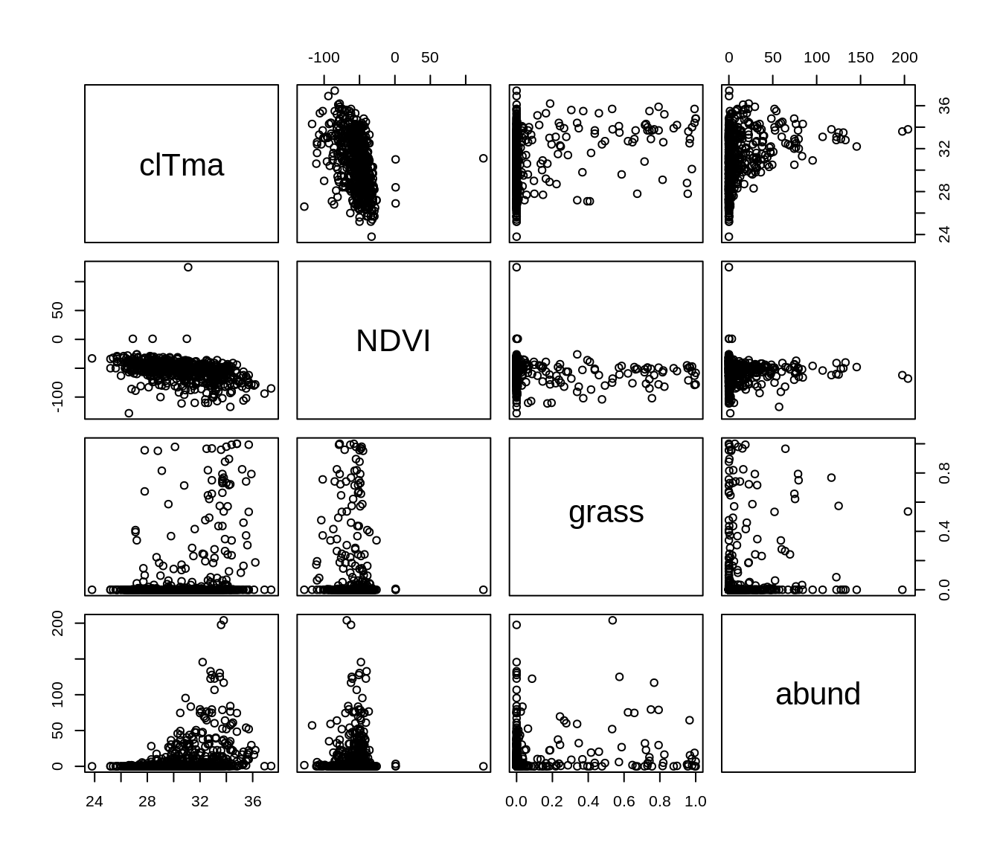
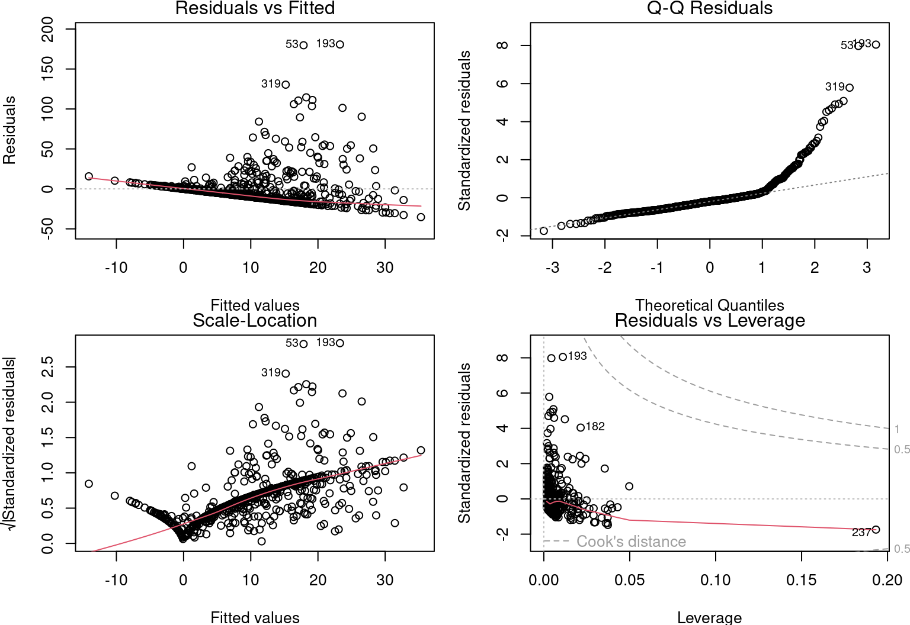
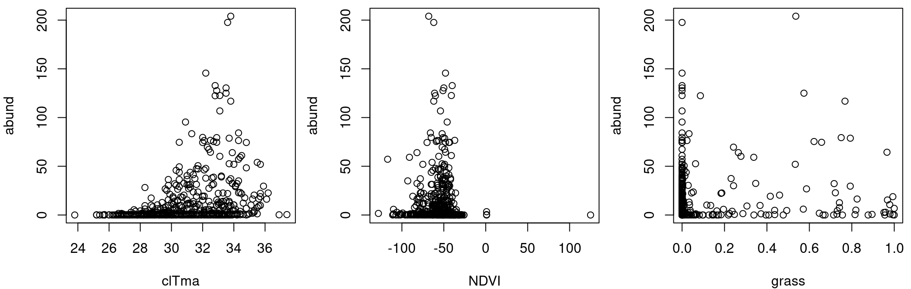
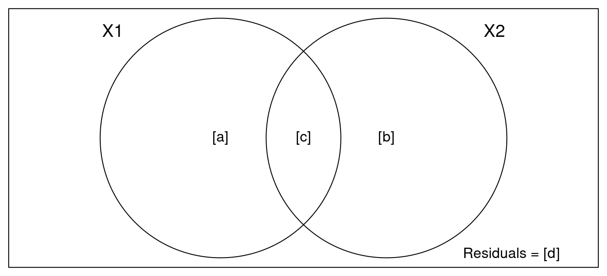
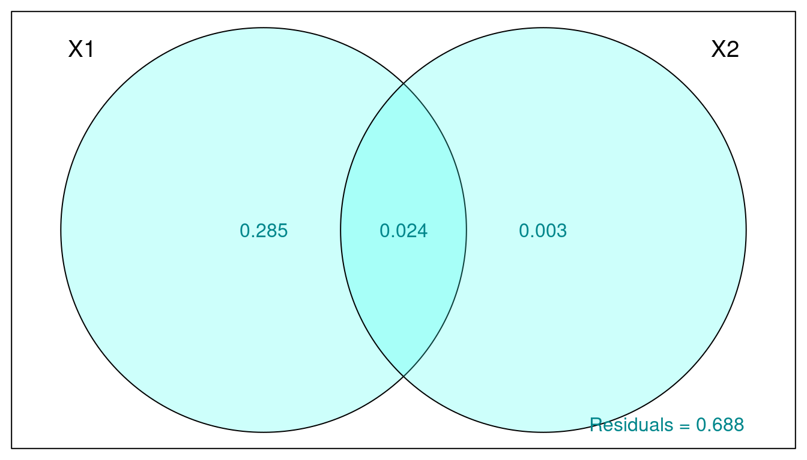

Chapitre 6 Régression multiple

Une régression multiple teste les effets de plusieurs variables explicatives continues sur une variable réponse continue. Elle se distingue de la régression linéaire simple en ayant plusieurs variables explicatives.
6.0.1 Formulation du modèle
Les variables
La régression linéaire multiple sont définies par les variables \(y\) représentant la variable réponse (continue) et \(x\) pour les variables explicatives (continues ou catégoriques).
La relation supposée
La relation entre la variable réponse et les prédicteurs se définit comme pour la régression simple. La différence est dans l’ajout de paramètres \(\beta\) pour les variables supplémentaires :
\[y_i = \beta_0 + \beta_1x_{1,i}+\beta_2x_{2,i}+\beta_3x_{3,i}+...+\beta_kx_{k,i} + \epsilon_i\]
- Le paramètre \(\beta_0\) est l’ordonnée à l’origine (ou constante)
- Les paramètres \(\beta_1\) quantifie l’effet de \(x\) sur \(y\)
- Le résidu \(\epsilon_i\) représente la variation non expliquée
- La valeur prédite de \(y_i\) se définit comme : \(\hat{y}_i = \beta_0 + \beta_1x_{1,i}+\beta_2x_{2,i}+\beta_3x_{3,i}+...+\beta_kx_{k,i}\).
La variation non expliquée ou l’erreur demeure distribuée normalement, centrée sur zéro avec une variance de \(\sigma^2\) :
\[\epsilon_i \sim \mathcal{N}(0,\,\sigma^2)\]
6.1 Conditions d’application
Dans le cas des régressions linéaires multiples, deux conditions d’application s’ajoutent conditions habituelles des modèles linéaires. Premièrement, il doit y avoir une relation linéaire entre chaque variable explicative et la variable réponse. Deuxièmement, les variables explicatives sont indépendantes les unes des autres (il n’y a pas de colinéarité).
6.1.1 En cas de colinéarité
En cas de colinéarité, il existe quelques solutions :
- Garder seulement une des variables colinéaires
- Essayer une analyse multidimensionnelle (voir l’atelier 9)
- Essayer une analyse pseudo-orthogonale
6.2 Régression linéaire multiple dans R
6.2.1 Les données
En utilisant le jeu de données Dickcissel nous comparerons l’importance relative du climat (clTma), de la productivité (NDVI) et de la couverture du sol (grass) comme prédicteurs de l’abondance de dickcissels (abund).
Dickcissel = read.csv("data/dickcissel.csv")
str(Dickcissel)## 'data.frame': 646 obs. of 15 variables:
## $ abund : num 5 0.2 0.4 0 0 0 0 0 0 0 ...
## $ Present : chr "Absent" "Absent" "Absent" "Present" ...
## $ clDD : num 5543 5750 5395 5920 6152 ...
## $ clFD : num 83.5 67.5 79.5 66.7 57.6 59.2 59.5 51.5 47.4 46.3 ...
## $ clTmi : num 9 9.6 8.6 11.9 11.6 10.8 10.8 11.6 13.6 13.5 ...
## $ clTma : num 32.1 31.4 30.9 31.9 32.4 32.1 32.3 33 33.5 33.4 ...
## $ clTmn : num 15.2 15.7 14.8 16.2 16.8 ...
## $ clP : num 140 147 148 143 141 ...
## $ NDVI : int -56 -44 -36 -49 -42 -49 -48 -50 -64 -58 ...
## $ broadleaf: num 0.3866 0.9516 0.9905 0.0506 0.2296 ...
## $ conif : num 0.0128 0.0484 0 0.9146 0.7013 ...
## $ grass : num 0 0 0 0 0 0 0 0 0 0 ...
## $ crop : num 0.2716 0 0 0.0285 0.044 ...
## $ urban : num 0.2396 0 0 0 0.0157 ...
## $ wetland : num 0 0 0 0 0 0 0 0 0 0 ...6.2.2 Vérification des conditions d’application
Il faut d’abord vérifier la présence de colinéarité entre toutes les variables explicatives et d’intérêt :
# Sélectionner lesvariables
var <- c("clTma", "NDVI", "grass", "abund")
# Graphiques des relations entre variables
plot(Dickcissel[, var])
Un patron observable entre deux variables explicatives peut indiquer qu’elles sont colinéaires ! Vous devez éviter ceci, sinon leurs effets sur la variable réponse seront confondus.
6.2.3 Régression linéaire
Maintenant, exécutons la régression multiple de l’abondance (abund) en fonction des variables clTma + NDVI + grass :
# Régression multiple
lm.mult <- lm(abund ~ clTma + NDVI + grass, data = Dickcissel)
summary(lm.mult)##
## Call:
## lm(formula = abund ~ clTma + NDVI + grass, data = Dickcissel)
##
## Residuals:
## Min 1Q Median 3Q Max
## -35.327 -11.029 -4.337 2.150 180.725
##
## Coefficients:
## Estimate Std. Error t value Pr(>|t|)
## (Intercept) -83.60813 11.57745 -7.222 1.46e-12 ***
## clTma 3.27299 0.40677 8.046 4.14e-15 ***
## NDVI 0.13716 0.05486 2.500 0.0127 *
## grass 10.41435 4.68962 2.221 0.0267 *
## ---
## Signif. codes: 0 '***' 0.001 '**' 0.01 '*' 0.05 '.' 0.1 ' ' 1
##
## Residual standard error: 22.58 on 642 degrees of freedom
## Multiple R-squared: 0.117, Adjusted R-squared: 0.1128
## F-statistic: 28.35 on 3 and 642 DF, p-value: < 2.2e-16Puis, vérifions les autres conditions d’application, comme pour la régression linéaire simple :
# Conditions d'application
par(mfrow = c(2, 2), mar = c(3.9, 4, 1.2, 1.1), oma = c(0, 0,
0, 0))
plot(lm.mult)
6.2.4 Définir le meilleur modèle
Il existe un principe de première importance dans la sélection de modèles. Il s’agit du principe de parcimonie. C’est-à-dire, expliquer le plus de variation avec le plus petit nombre de termes. Nous pourrions donc enlever la variable la moins significative.
summary(lm.mult)$coefficients## Estimate Std. Error t value Pr(>|t|)
## (Intercept) -83.6081274 11.5774529 -7.221634 1.458749e-12
## clTma 3.2729872 0.4067706 8.046272 4.135118e-15
## NDVI 0.1371634 0.0548603 2.500231 1.265953e-02
## grass 10.4143451 4.6896157 2.220725 2.671787e-02Les 3 variables sont importantes. On garde tout !
Le modèle explique 11.28% de la variabilité de l’abondance de dickcissels \(R²_{adj} = 0.11\).
Toutefois, ces informations ne sont pas valables, car les conditions d’application du modèle linéaire ne sont pas respectées.
Il est important de noter que la variable réponse ne varie pas de façon linéaire avec les variables explicatives :
par(mfrow = c(1, 3), mar = c(4, 4, 0.5, 0.5), cex = 1)
plot(abund ~ clTma, data = Dickcissel)
plot(abund ~ NDVI, data = Dickcissel)
plot(abund ~ grass, data = Dickcissel)
6.3 Régression polynomiale (matériel facultatif)
Comme nous l’avons remarqué dans la section sur la régression linéaire multiple, certaines variables semblent avoir des relations non-linéaires avec la variable abund.
Pour tester des relations non-linéaires, des régressions polynomiales de différents degrés sont comparées
Un modèle polynômial ressemble à ceci :
\[\underbrace{2x^4}+\underbrace{3x}-\underbrace{2}\]
Ce polynôme a trois termes.
Pour un polynôme avec une variable (comme \(x\) ), le degré est l’exposant le plus élevé de cette variable. Nous avons ici un polynôme de degré 4:
\[2x^\overbrace{4} + 3x - 2\]
Lorsque vous connaissez le degré, vous pouvez lui donner un nom :
| Degré | Nom | Example |
|---|---|---|
| 0 | Constante | \(3\) |
| 1 | Linéaire | \(x+9\) |
| 2 | Quadratique | \(x^2-x+4\) |
| 3 | Cubique | \(x^3-x^2+5\) |
| 4 | Quartique | \(6x^4-x^3+x-2\) |
| 5 | Quintique | \(x^5-3x^3+x^2+8\) |
Nous pouvson maintenant règler notre problème avec le jeu de données Dickcisselen testant la relation non-linéaire entre l’abondance et la température en comparant trois modèles polynômiaux groupés (de degrés 0, 1, and 3) :
lm.linear <- lm(abund ~ clDD, data = Dickcissel)
lm.quad <- lm(abund ~ clDD + I(clDD^2), data = Dickcissel)
lm.cubic <- lm(abund ~ clDD + I(clDD^2) + I(clDD^3), data = Dickcissel)En comparant les modèles polynomiaux, nous pouvons déterminer quel modèle niché nous devrions sélectionner:
summary(lm.linear)##
## Call:
## lm(formula = abund ~ clDD, data = Dickcissel)
##
## Residuals:
## Min 1Q Median 3Q Max
## -17.062 -10.608 -7.758 -2.487 193.128
##
## Coefficients:
## Estimate Std. Error t value Pr(>|t|)
## (Intercept) 1.864566 2.757554 0.676 0.49918
## clDD 0.001870 0.000588 3.180 0.00154 **
## ---
## Signif. codes: 0 '***' 0.001 '**' 0.01 '*' 0.05 '.' 0.1 ' ' 1
##
## Residual standard error: 23.81 on 644 degrees of freedom
## Multiple R-squared: 0.01546, Adjusted R-squared: 0.01393
## F-statistic: 10.11 on 1 and 644 DF, p-value: 0.001545summary(lm.quad)##
## Call:
## lm(formula = abund ~ clDD + I(clDD^2), data = Dickcissel)
##
## Residuals:
## Min 1Q Median 3Q Max
## -14.057 -12.253 -8.674 1.495 190.129
##
## Coefficients:
## Estimate Std. Error t value Pr(>|t|)
## (Intercept) -1.968e+01 5.954e+00 -3.306 0.001 **
## clDD 1.297e-02 2.788e-03 4.651 4.00e-06 ***
## I(clDD^2) -1.246e-06 3.061e-07 -4.070 5.28e-05 ***
## ---
## Signif. codes: 0 '***' 0.001 '**' 0.01 '*' 0.05 '.' 0.1 ' ' 1
##
## Residual standard error: 23.53 on 643 degrees of freedom
## Multiple R-squared: 0.04018, Adjusted R-squared: 0.0372
## F-statistic: 13.46 on 2 and 643 DF, p-value: 1.876e-06summary(lm.cubic)##
## Call:
## lm(formula = abund ~ clDD + I(clDD^2) + I(clDD^3), data = Dickcissel)
##
## Residuals:
## Min 1Q Median 3Q Max
## -14.417 -12.247 -8.394 1.473 189.955
##
## Coefficients:
## Estimate Std. Error t value Pr(>|t|)
## (Intercept) -1.465e+01 1.206e+01 -1.215 0.225
## clDD 8.612e-03 9.493e-03 0.907 0.365
## I(clDD^2) -1.628e-07 2.277e-06 -0.071 0.943
## I(clDD^3) -8.063e-11 1.680e-10 -0.480 0.631
##
## Residual standard error: 23.54 on 642 degrees of freedom
## Multiple R-squared: 0.04053, Adjusted R-squared: 0.03605
## F-statistic: 9.04 on 3 and 642 DF, p-value: 7.202e-06Quel modèle devriez-vous choisir
6.4 Partitionnement de la variation (matériel facultatif)
Certaines variables explicatives de la régression linéaire multiple étaient fortement corrélées (c.-à-d.multicolinéarité)
La colinéarité entre variables explicatives peut être détectée à l’aide de critères d’inflation de la variance (fonction vif() du package car).
Les valeurs supérieures à 5 sont considérées colinéaires:
mod <- lm(clDD ~ clFD + clTmi + clTma + clP + grass, data = Dickcissel)
car::vif(mod)## clFD clTmi clTma clP grass
## 13.605855 9.566169 4.811837 3.196599 1.165775Dans cet exemple, clFD,clTmi etclTma sont colinéaires avec clDD.
Plutôt que d’enlever des variables à notre modèle, il est possible réduire l’effet de colinéarité en regroupant certaines variables entre elles. Vous pouvez utiliser varpart() afin de partitionner la variation de la variable abund avec toutes les variables de la couverture du paysage groupées ensemble ("broadleaf","conif","grass","crop", "urban","wetland") et toutes les variables du climat groupées ensemble ("clDD","clFD","clTmi","clTma","clP"). Laissez NDVI à part
library(vegan)
part.lm = varpart(Dickcissel$abund, Dickcissel[, c("clDD", "clFD",
"clTmi", "clTma", "clP")], Dickcissel[, c("broadleaf", "conif",
"grass", "crop", "urban", "wetland")])
part.lm##
## Partition of variance in RDA
##
## Call: varpart(Y = Dickcissel$abund, X = Dickcissel[, c("clDD", "clFD",
## "clTmi", "clTma", "clP")], Dickcissel[, c("broadleaf", "conif",
## "grass", "crop", "urban", "wetland")])
##
## Explanatory tables:
## X1: Dickcissel[, c("clDD", "clFD", "clTmi", "clTma", "clP")]
## X2: Dickcissel[, c("broadleaf", "conif", "grass", "crop", "urban", "wetland")]
##
## No. of explanatory tables: 2
## Total variation (SS): 370770
## Variance: 574.84
## No. of observations: 646
##
## Partition table:
## Df R.squared Adj.R.squared Testable
## [a+c] = X1 5 0.31414 0.30878 TRUE
## [b+c] = X2 6 0.03654 0.02749 TRUE
## [a+b+c] = X1+X2 11 0.32378 0.31205 TRUE
## Individual fractions
## [a] = X1|X2 5 0.28456 TRUE
## [b] = X2|X1 6 0.00327 TRUE
## [c] 0 0.02423 FALSE
## [d] = Residuals 0.68795 FALSE
## ---
## Use function 'rda' to test significance of fractions of interestNote : les variables colinéaires n’ont pas besoin d’être enlevées avant l’analyse.
Avec showvarpart(), il est possible de visualiser comment ces deux groupes (climat et paysage) expliquent la variation de la variable abund.
Par exemple:
showvarparts(2)
`?`(showvarparts)
# With two explanatory tables, the fractions explained
# uniquely by each of the two tables are ‘[a]’ and ‘[c]’,
# and their joint effect is ‘[b]’ following Borcard et al.
# (1992).Essayons avec nos données Dickcissel et notre modèle.
par(mar = rep(0.5, 4))
plot(part.lm, digits = 2, bg = rgb(48, 225, 210, 80, maxColorValue = 225),
col = "turquoise4")
La proportion de la variation de la variable abund expliquée par:
- Le climat est de 28.5% (obtenu par X1|X2)
- La couverture du paysage est ~0% (X2|X1)
- Les deux combinés est 2.4%.
La variation non-expliquée par ces groupes (les résidus) est de 68.8%.
Nous pouvons tester si chaque fraction est significative:
- Climat seul
out.1 = rda(Dickcissel$abund, Dickcissel[, c("clDD", "clFD",
"clTmi", "clTma", "clP")], Dickcissel[, c("broadleaf", "conif",
"grass", "crop", "urban", "wetland")])- Couverture du paysage seul
out.2 = rda(Dickcissel$abund, Dickcissel[, c("broadleaf", "conif",
"grass", "crop", "urban", "wetland")], Dickcissel[, c("clDD",
"clFD", "clTmi", "clTma", "clP")])# Climat seul
anova(out.1, step = 1000, perm.max = 1000)## Permutation test for rda under reduced model
## Permutation: free
## Number of permutations: 999
##
## Model: rda(X = Dickcissel$abund, Y = Dickcissel[, c("clDD", "clFD", "clTmi", "clTma", "clP")], Z = Dickcissel[, c("broadleaf", "conif", "grass", "crop", "urban", "wetland")])
## Df Variance F Pr(>F)
## Model 5 165.12 53.862 0.001 ***
## Residual 634 388.72
## ---
## Signif. codes: 0 '***' 0.001 '**' 0.01 '*' 0.05 '.' 0.1 ' ' 1# Couverture du paysage seul
anova(out.2, step = 1000, perm.max = 1000)## Permutation test for rda under reduced model
## Permutation: free
## Number of permutations: 999
##
## Model: rda(X = Dickcissel$abund, Y = Dickcissel[, c("broadleaf", "conif", "grass", "crop", "urban", "wetland")], Z = Dickcissel[, c("clDD", "clFD", "clTmi", "clTma", "clP")])
## Df Variance F Pr(>F)
## Model 6 5.54 1.5063 0.167
## Residual 634 388.72La fraction expliquée par la couverture du paysage n’est pas significative une fois que nous avons pris en compte l’effet du climat. Ceci était attendu puisque la variation expliqué pour ce groupe était seulement 0.3%.
En conclusion, en partitionnant la variation, nous avons pu tenir compte de notre colinéarité entre nos variables et tout de même tester l’effet du climat et du paysage d’une façon simple et facile d’interprétation!